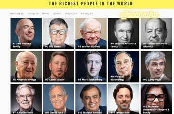

The 10 Richest People in the World

Billionaires play an outsized role in shaping the global economy, politics, and philanthropy. Forbes puts the number of billionaires in the world at 2,668 in 2022.1 The wealthiest among them belong to an even more exclusive club and wield still more power. Many of these billionaires are founders of technology giants, with much of their wealth still invested in the companies they started.2
They can, however, still borrow against that wealth to avoid selling stock, deferring (or eliminating for heirs) taxes on unrealized capital gains in the process.3 Multi-billionaires can also take advantage of a panoply of tax deductions to offset reported income, leaving some on this list paying no income tax in recent years.4
With so much of their wealth in publicly traded stocks, the net worth of the richest can fluctuate with market valuations. For example, Elon Musk, founder and CEO of Tesla Inc. (TSLA) and the richest person in the world saw his net worth surge in 2021 thanks to the increase in the share price of Tesla (where he currently owns 17% of the company)—with Tesla shares rising nearly 50% in 2021.526
In contrast, Meta Platforms Inc. (FB) founder and CEO Mark Zuckerberg fell out of the top 10 in February 2022, when Meta's share price plunged after a disappointing earnings report. Zuckerberg's net worth is down $43 billion in 2022.7
2
Below are the 10 wealthiest people on the planet as of the same date, according to the Bloomberg Billionaires Index.
1. Elon Musk
Age: 50
Residence: Texas
Co-founder and CEO: Tesla
Net Worth: $268 billion
Tesla Ownership Stake: 16% ($134 billion)
Other Assets: Space Exploration Technologies ($40.3 billion private asset), The Boring Company ($3.4 billion private asset), Twitter ($3.6 billion public asset), $9.35 billion in cash9106
Elon Musk was born in South Africa and attended a university in Canada before transferring to the University of Pennsylvania, where he earned bachelor's degrees in physics and economics. Two days after enrolling in a graduate physics program at Stanford University, Musk deferred attendance to launch Zip2, one of the earliest online navigation services. He reinvested a portion of the proceeds from this startup to create X.com, the online payment system that was sold to eBay Inc. (EBAY) and ultimately became PayPal Holdings Inc. (PYPL).11
In 2004, Musk became a major funder of Tesla Motors (now Tesla), which led to his current position as CEO of the electric vehicle company.12 In addition to its line of electric automobiles, Tesla also produces energy storage devices, automobile accessories, and, through its acquisition of SolarCity in 2016, solar power systems.13 Musk is also CEO and chief engineer of Space Exploration Technologies (SpaceX), a developer of space launch rockets.11
In 2020, Tesla shares soared 740% to propel Musk up the wealth rankings. In December 2020, Tesla joined the S&P 500, becoming the largest company added. In January 2021, Musk became the richest person in the world (a title he's held since).614
In a Nov. 6, 2021 tweet, Musk asked his Twitter audience whether he should sell 10% of his Tesla stock, framing the issue as a response to criticism of unrealized capital gains as a means of avoiding taxes.15 He proceeded to sell shares worth $16.4 billion over the remainder of 2021.16
U.S. Sen. Elizabeth Warren, a Massachusetts Democrat, has cited a media report that Musk paid no income tax for 2018 to argue for the adoption of a wealth tax. "And if you opened your eyes for 2 seconds, you would realize I will pay more taxes than any American in history this year," Musk responded on Twitter.17
Thanks to the surge in Tesla shares in 2021 and private transactions boosting the reported valuation of SpaceX, Musk's lead in the global wealth rankings has continued to grow. His net worth hit a high of $340 billion in November 2021. Musk's net worth has increased by 60% over the last year (as of Apr. 1, 2022).2
In April 2022, Musk began a campaign to take Twitter private, which culminated in a $44 billion buyout. Musk plans to fund the deal with $21 billion of his own capital. In the run up to the buyout announcement, Musk sold 9.6 million shares of Tesla, valued at roughly $8.5 billion.1819
2. Jeff Bezos
Age: 58
Residence: Washington
Founder and Executive Chair: Amazon (AMZN)
Net Worth: $150 billion
Amazon Ownership Stake: 10% ($126 billion)
Other Assets: Blue Origin ($9.15 billion private asset), The Washington Post ($250 million private asset), and $15.1 billion in cash8
In 1994, Jeff Bezos founded Amazon.com in a garage in Seattle, shortly after he resigned from the hedge fund giant D.E. Shaw.20 He had originally pitched the idea of an online bookstore to his former boss David E. Shaw, who wasn’t interested.21
Though Amazon.com originally started out selling books, it has since morphed into a one-stop shop for everything under the sun and is arguably the world’s largest retailer. Amazon's pattern of constant diversification is evident in some of its unexpected expansions, which include acquiring Whole Foods in 2017 and entering the pharmacy business the same year.2223
Bezos owned as much as 16% of Amazon in 2019 before transferring 4% to former wife MacKenzie Scott as part of the divorce proceedings. In 2020, Amazon’s share price jumped 76% on the heightened demand for online shopping amid the COVID-19 pandemic. On July 5, 2021, Bezos stepped down as CEO of the e-commerce giant, becoming its executive chair.
Bezos originally took Amazon public in 1997 and went on to become the first man since Bill Gates in 1999 to achieve a net worth of more than $100 billion.25 Bezos’ other projects include aerospace company Blue Origin, The Washington Post (which he purchased in 2013), and the 10,000-year clock—also known as the Long Now.2627
On July 20, 2021, Bezos, his brother Mark, aviation pioneer Wally Funk, and Dutch student Oliver Daemen completed Blue Origin's first successful crewed flight, reaching an altitude of more than 66 miles before landing safely. Bezos' wealth peaked at $211 billion in the same month.
3. Bernard Arnault
Age: 73
Residence: Paris, France
CEO and Chair: LVMH (LVMUY)
Net Worth: $132 billion
Christian Dior Ownership Stake: 97.5% ($120 billion total)
Other Assets: Moelis & Company equity ($19.8 billion public asset), Hermès equity (undisclosed stake), and $11 billion in cash30
French national Bernard Arnault is the chair and CEO of LVMH, the world’s largest luxury goods company. LVMH owns brands including Louis Vuitton, Hennessey, Marc Jacobs, and Sephora.31
Most of Arnault's wealth comes from his massive stake in Christian Dior SE, the holding company that controls 41.3% of LVMH.32 His shares in Christian Dior SE, plus an additional 6.2% in LVMH, are held through his family-owned holding company, Groupe Familial Arnault.30
An engineer by training, Arnault first showed his business acumen while working for his father’s construction firm, Ferret-Savinel, taking charge of the company in 1971. He converted Ferret-Savinel to a real estate company named Férinel Inc. in 1979
Arnault remained Férinel's chair for another six years, until he acquired and reorganized luxury goods maker Financière Agache in 1984, eventually selling all its holdings other than Christian Dior and Le Bon Marché.34 He was invited to invest in LVMH in 1987 and became the majority shareholder, chair of the board, and CEO of the company two years later.
4. Bill Gates
Age: 66
Residence: Washington
Co-founder: Microsoft Corp. (MSFT)
Net Worth: $127 billion
Microsoft Ownership Stake: 1.3% ($29.9 billion)
Other Assets: Cascade Investment LLC ($57.1 billion public assets), $55 billion in cash36
While attending Harvard University in 1975, Bill Gates went to work alongside his childhood friend Paul Allen to develop new software for the original microcomputers. Following this project’s success, Gates dropped out of Harvard during his junior year and went on to found Microsoft with Allen.3738
The largest software company in the world, Microsoft also produces its line of personal computers, publishes books through Microsoft Press, provides email services through its Exchange server, and sells video game systems and associated peripheral devices.394041 Originally Microsoft's chief software architect, Gates shifted to the role of board chair in 2008. He had joined Berkshire Hathaway’s board in 2004.42 He stepped down from both boards on March 13, 2020.4344
Bill Gates has much of his net worth in Cascade Investment LLC. Cascade is a privately-held investment vehicle that owns a variety of stocks including Canadian National Railway (CNR), Deere (DE), and Republic Services (RSG), as well as private investments in real estate and energy.
In 2000, Gates' two philanthropic organizations—the William H. Gates Foundation and the Gates Learning Foundation—merged to create the Bill & Melinda Gates Foundation, still co-chaired by Gates and his ex-wife, Melinda French Gates.4546 Through the foundation, they have spent billions to fight polio and malaria.47 The foundation pledged $50 million in 2014 to help fight Ebola.48 As of 2021, the foundation had spent more than $1.9 billion to combat the COVID-19 pandemic.49
In 2010, alongside Warren Buffett, Bill Gates launched the Giving Pledge, a campaign encouraging the wealthy to commit to donating most of their wealth to philanthropic causes.50 Bill and Melinda French Gates divorced on Aug. 2, 2021.51 With the divorce, roughly $5 billion in equities were transferred to French Gates.36 Bill Gates is also largest private owner of farmland in the U.S. with over 268,000 acres.52
5. Gautam Adani
Age: 59
Residence: Gurgaon, India
Founder and Chair: Adani Group
Net Worth: $120 billion
Adani Enterprises, Power. and Transmissions Ownership Stakes: 75% each ($70.9 billion)
Other Assets: 65% of Adani Ports & Special Economic Zone ($12.6 billion public asset), 61% of Adani Green Energy ($23.3 billion public asset), 37% of Adani Total Gas ($13.2 billion public asset)53
Gautam Adani, the founder of Adani Group, surpassed Mukesh Ambani in March 2022 as the richest person in Asia. Adani, via his ownership of Adani Group, owns major stakes in six key Indian companies, including a 75% stake in Adani Enterprises, Adani Power, and Adani Transmissions, as well as a 65% stake in Adani Ports & Special Economic Zone, 61% stake in Adani Green Energy, and 37% stake in Adani Total Gas.53
The combined market cap of companies owned by the Adani Group is $214 billion (as of May 5, 2022). Adani entered the power generation market in 2009 with Adani Power. Adani created Adani Enterprises in 1988 to import and export commodities. In 1994, his company was granted approval to develop a harbor facility at Mundra Port, which is now the largest private port in India.5453
Adani dropped out of college and previously worked in the diamond trade. Now, Adani has the largest port operator, closely-held thermal coal producer, and coal trader in India. In 2020, he purchased a 74% stake in the second-busiest airport in India, Mumbai International Airport. The billionaire was kidnapped and held for ransom in 1997. Adani was also in Mumbai’s Taj hotel during the 2008 terrorist attack.5553
6. Warren Buffett
Age: 91
Residence: Nebraska
CEO: Berkshire Hathaway (BRK.A)
Net Worth: $116 billion
Berkshire Hathaway Ownership Stake: 16% ($115 billion)
Other Assets: $1.1 billion in cash56
The most famous living value investor, Warren Buffett filed his first tax return in 1944 at age 14, declaring earnings from his boyhood paper route.57 He first bought shares in a textile company called Berkshire Hathaway in 1962, becoming the majority shareholder by 1965. He expanded the company to insurance and other investments in 1967. Now Berkshire Hathaway is a $705 billion-dollar market cap company, with a single share of stock (Class A shares) trading at more than $481,000 as of May 5, 2022.5859
Widely known as the "Oracle of Omaha," Buffett is a buy-and-hold investor who built his fortune by acquiring undervalued companies.58 More recently, Berkshire Hathaway has invested in large, well-known companies.60 Its portfolio of wholly owned subsidiaries includes interests in insurance, energy distribution, and railroads as well as consumer products.61 Buffett is a noted Bitcoin skeptic.
Buffett has dedicated much of his wealth to philanthropy. Between 2006 and 2020, he gave away $41 billion—mostly to the Bill & Melinda Gates Foundation and his children’s charities.63 Buffett launched the Giving Pledge alongside Bill Gates in 2010.50
Buffett, 91 years old, still serves as CEO, but in 2021 he hinted at who might be his successor—Gregory Abel. Abel is the head of Berkshire’s non-insurance operations.
7. Larry Page
Age: 49
Residence: California
Co-founder and Board Member: Alphabet (GOOG)
Net Worth: $105 billion
Alphabet Ownership Stake: 6% ($90.9 billion total)
Other Assets: $14.6 billion in cash64
Like several tech billionaires on this list, Larry Page embarked on his path to fame and fortune in a college dorm room. While attending Stanford University in 1995, Page and his friend Sergey Brin came up with the idea of improving internet data extraction. The duo devised a new search engine technology they dubbed "Backrub," named after its ability to analyze "backing links." From there, Page and Brin went on to found Google in 1998, with Page serving as CEO of the company until 2001, and again between 2011 and 2019.6566
Google is the dominant internet search engine, accounting for more than 92% of global search requests.67 In 2006, the company purchased YouTube, the top platform for user-submitted videos.68 After acquiring Android, Inc. in 2005, Google released the Android mobile phone operating system in 2008.6970 Google reorganized in 2015, becoming a subsidiary of Alphabet, a holding company.
Page was among early investors in Planetary Resources, a space exploration and asteroid-mining company. Established in 2009, the company was acquired by blockchain firm ConsenSys in 2018 amid funding problems.72
He has also shown an interest in "flying car" companies, investing in both Kitty Hawk and Opener. Shares of Google soared almost 50% in 2021, moving Page and Brin up the billionaire list. Page's net worth went from just below $52 billion in March 2020 to the current $105 billion.6473
8. Sergey Brin
Age: 48
Residence: California
Co-founder and Board Member: Alphabet (GOOG)
Net Worth: $101 billion
Alphabet Ownership Stake: 6% ($86.5 billion total)
Other Assets: $14.7 billion in cash74
Sergey Brin was born in Moscow, Russia, moving to the U.S. with his family as a 6-year-old in 1979. After co-founding Google with Larry Page in 1998, Brin became Google's president of technology when Eric Schmidt took over as CEO in 2001. He held the same post at the Alphabet holding company after it was established in 2015, stepping down in 2019 when Sundar Pichai took over as CEO.7576
In addition to its dominant internet search engine, Google offers a suite of online tools and services known as Google Workspace, which includes Gmail, Google Drive, Google Calendar, Google Meet, Google Chat, Google Docs, Google Sheets, Google Slides, and more.77 Google also offers a variety of electronic devices, including Pixel smartphones, computers, and tablets, Nest smart home devices, and Stadia gaming platform.
Brin spent much of 2019 focusing on X, Alphabets research laboratory responsible for innovative technologies like Waymo self-driving cars and Google Glass smart glasses.79 He has also donated millions of dollars to Parkinson’s disease research, partnering with The Michael J. Fox Foundation.80
9. Mukesh Ambani
Age: 65
Residence: Mumbai, India
Chair and Managing Director: Reliance Industries
Net Worth: $97.7 billion
Reliance Industries Ownership Stake: 45% ($98.2 billion)
Other Assets: Mumbai residential property ($410 million private asset)81
Mukesh Ambani was born in British-controlled Yemen, the son of a trading company clerk. The following year, his father, Dhirubhai Ambani, moved back to India, settling with his family in a two-room Mumbai apartment and starting a spice trading business. Dhirubhai Ambani opened his first textile mill in 1966; his company, Reliance Industries, was listed on the Mumbai stock exchange in 1977 and has since acquired a large and loyal following of shareholders.82838485
Mukesh Ambani earned a degree in chemical engineering from the University of Mumbai. He has been a member of Reliance's board of directors since 1977.86
Mukesh Ambani entered Stanford University in 1979 to pursue a master's in business administration but left without that degree in 1981, returning to India to oversee Reliance's expansion into petrochemicals, oil refining, and oil and gas drilling.85
After Dhirubhai Ambani suffered a stroke and died in 2002, Mukesh Ambani assumed joint leadership of Reliance with his brother Anil. As the brothers fought for control, their mother brokered a 2005 settlement splitting the company, with Mukesh retaining the refining, petrochemicals, oil and gas, and textile operations while Anil's group took charge of Reliance's telecom, power, entertainment, and financial services assets.8788
The feuding continued until 2010 when the brothers settled a legal dispute over natural gas and dissolved the non-compete agreements included in the 2005 settlement. In 2013, Mukesh and Anil Ambani seemingly buried the hatchet with the first deal between subsidiaries of their respective companies, a $220 million pact to share a fiberoptic network.89
Under Mukesh Ambani's leadership, Reliance Industries has expanded into retail and telecommunications. Two Indian publications named him the world's richest man in 2007.85 Ambani is a member of the board of the World Economic Forum.90 In 2010, he founded Reliance Foundation on behalf of his company to promote rural development, health, and education.